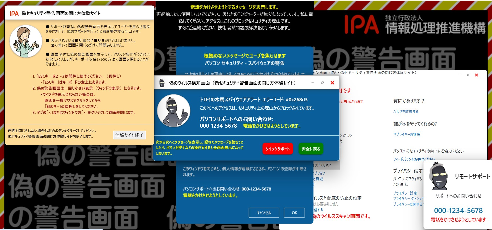
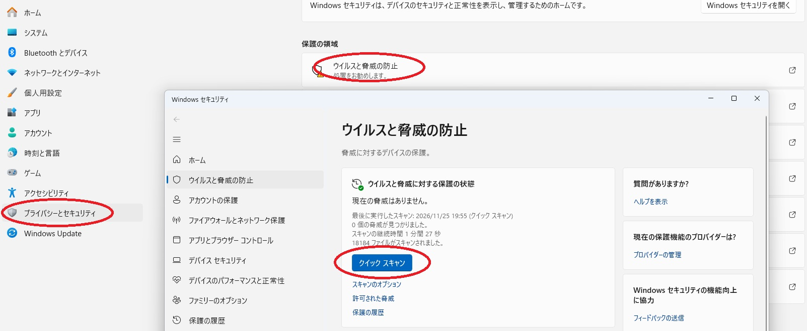

「ウイルスに感染しました」と出たら｜閉じ方と対処
電話番号が書いてあれば偽物？ 電話してしまった時の対処も解説
ネットを見ていたら、突然画面いっぱいに「ウイルスに感染しました」と出ました。
音が鳴りやみません。
「今すぐ電話してください」と書いてあります。
慌てるのは当然です。
でも、その場で電話だけはしないでください。
この手の警告は、ほとんどが偽物です。
パソコンが本当に感染したのではなく、電話をかけさせるために表示されている画面です。
この記事では、偽物かどうかの見分け方、画面の閉じ方、電話してしまったときの対処を、順番に解説します。
まず押さえること：電話番号が書いてある警告は、まず偽物だと疑う
本物のMicrosoftの警告やエラーメッセージに、電話番号が書かれることはありません。
これはMicrosoftが公式に案内していることです。
Microsoftのサポートが、ギフトカードやビットコインで料金を請求することはありません。
サポートの担当者が、社員証を見せて身分を証明することもありません。
つまり、「電話してください」と番号が書いてある時点で、偽物のサインです。
本物かどうかを、その場で見極める必要はありません。
まず番号の有無で判断してください。
本当に感染が疑われる場合に知らせるのは、Windowsの標準機能であるMicrosoft Defenderです。
ブラウザの画面いっぱいに、電話番号つきで表示される形ではありません。

▲ 偽のセキュリティ警告画面の例（IPAの体験サイトより）
授業でも、受講生の方が「ウイルスに感染しましたって出たんですけど」と、慌てて画面を見せてくることがあります。
私が最初に見るのは、警告の内容ではなく、電話番号が書いてあるかどうかです。
番号があれば、その場で「これは偽物だよ」と言えます。
電話番号が書いてある警告は、まず偽物。
これだけ覚えておいてください。
- 電話番号が書いてある
- 音や声で「今すぐ」と急かしてくる
- 画面いっぱいに表示されて、閉じる場所が見つからない
授業中での実話
私が担当してきた授業中でも、実はこの偽感染は過去何度もありました。
タイピングの授業で、ぱそトレ！以外のサイトももちろん使ったりするのですが、あるサイトで、間違えてなんらかのバナー広告を押してしまったようで、「すいません、なんか画面が変なんです」と。
見てみると、大量の警告ウィンドウが出ていました。
まずEscキーを長押ししてみましたが、右上に[✕]ボタンは出ませんでした。
次にタスクマネージャーから、ブラウザを強制終了しました。
それでもまだ画面に残っていたので、Windowsを再起動しました。
再起動後は無事元通りです。
でも、知らない人からすると、本当に感染したのか！？と思いますよね。
まずすること：電話しない・クリックしない・閉じるだけ
判断の順番は、3つだけです。
1つ目、電話しないこと。
被害は、電話をかけて、相手の指示に従ったところから始まります。
電話をかけなければ、被害は発生しません。
国の情報セキュリティの専門機関である、情報処理推進機構（IPA）の案内でも、はっきり書かれていることです。
2つ目、画面のボタンは押さないこと。
「閉じる」「キャンセル」と書いてあっても、それは相手が用意したボタンです。
押すと全画面表示が強くなったり、別の画面に進んだりすることがあります。
3つ目、音がうるさいときは、先にパソコンの音量を下げること。
音は、慌てさせるための仕掛けです。
音が小さくなれば、落ち着いて閉じる操作ができます。
「このPCへのアクセスはブロックされました」
「トロイの木馬（Trojan）に感染しました」
Microsoftが例として挙げている文面です。
どれも、電話をかけさせるための決まり文句です。
「ウイルスに感染しました」画面の閉じ方（Esc長押し・タスクマネージャー）
閉じ方は2つあります。
まず方法1を試して、ダメなら方法2に進んでください。
方法1：Escキーの長押しで、全画面を解除する
1. キーボードの Esc キーを、3秒ほど長押しします。
2. 全画面表示が解除されて、画面の上にバーが出ます。
3. ブラウザの右上の [✕] をクリックして、タブ（またはブラウザ）を閉じます。
方法2：タスクマネージャーで、ブラウザを終了する
1. Ctrl と Alt と Del を、同時に押します。
2. 出てきた画面で、[タスクマネージャー]を選びます。
3. 一覧から、使っていたブラウザ（EdgeやChrome）を選びます。
4. [タスクの終了]をクリックします。
それでも閉じられないときは、Ctrl ＋ Alt ＋ Del の画面で、右下の電源アイコンから再起動を選んでください。
再起動すれば、警告の画面は消えます。
タスクマネージャーの詳しい使い方は、Windowsの基本操作の記事で解説しています。
閉じたあと、ブラウザを開き直したときに「ページを復元しますか」と出たら、復元しないでください。
同じ警告の画面が戻ってくることがあります。
閉じたあと、心配なときは
「本当に感染していないか」が気になる場合は、Microsoft Defenderのスキャンを自分で実行して確かめられます（手順はWindows 11の場合です）。
1. スタートボタンを押して、[設定]を開きます。
2. 左側の[プライバシーとセキュリティ]を選びます。
3. [Windows セキュリティ]をクリックします。
4. [ウイルスと脅威の防止]を開きます。
5. [クイック スキャン]をクリックします。

▲ Windows セキュリティの画面からクイック スキャンを実行できます
結果に「脅威は見つかりませんでした」と出れば、一安心です。
誰かに言われてではなく、自分で開いた画面で確かめるのがポイントです。
閉じる操作に慣れておきたい方は、IPAの 「偽セキュリティ警告（サポート詐欺）対策特集ページ」 で、偽の警告画面を使った練習ができます（パソコン専用です。練習でも音が出るので、音量に注意してください）。
電話してしまった・ソフトを入れてしまったとき
電話をしてしまっても、そこで止まれば被害は広がりません。
自分を責めなくて大丈夫です。
順番に対処しましょう。
電話しただけ・話しただけの場合
相手の指示には従わないでください。
お金は払いません。
あとから電話がかかってきても、出ないようにして、着信拒否にしておきます。
念のため、ブラウザの履歴も消しておくと安心です。
警告のページに戻ってしまう心配がなくなります。
ソフトを入れた・遠隔操作を許した場合
入れたソフトは、アンインストールしてください。
どのソフトか分からない場合は、Windowsの「システムの復元」で、入れる前の状態に戻す方法があります。
それもできない場合は、初期化が確実です（IPAの案内）。
大事なファイルは、先にUSBメモリなどへ移しておいてください。
お金を払った・銀行やカードの情報を伝えた場合
すぐに警察と、銀行・カード会社へ連絡してください。
ネットバンキングを開かせられた場合は、パスワードの変更と、身に覚えのない取引がないかの確認も必要です。
職場のパソコンで起きた場合は、自分で判断せず、会社の担当者や管理者に連絡してください。
- IPA 情報セキュリティ安心相談窓口：03-5978-7509（平日10:00〜12:00、13:30〜17:00）
- 消費者ホットライン：188（近くの消費生活センターにつながります）
- 警察相談専用電話：#9110
一人で抱えず、まず相談してください。
電話してしまったことを、恥ずかしくて誰にも言えない、という方がいます。
でも、そこで黙ってしまうと、相手の思うつぼです。
電話してしまっても、そこで止まれば被害は広がりません。
家族や先生、相談窓口に話すことが、そのまま対処の第一歩になります。
画面の右下から警告が繰り返し出るとき
ブラウザを閉じたのに、画面の右下から同じような警告が繰り返し出ることがあります。
これは、ブラウザの「通知」を許可してしまったことが原因のことがあります。
警告のサイトに通知を許可すると、ブラウザを閉じていても、通知の形で警告が出続けます。
対処は、通知の許可を取り消すことです。
Edgeの場合は、次の順番です。
1. Edgeの右上の […] をクリックして、[設定]を開きます。
2. [Cookieとサイトのアクセス許可]を選びます。
3. [通知]を選びます。
4. 「許可」の一覧から、覚えのないサイトを探して、右の […] から[削除]を選びます。
メニューや設定の名称は、ブラウザのバージョンで変わる場合があります。
Chrome（パソコン）の場合は、[設定]から[プライバシーとセキュリティ]、[サイトの設定]、[通知]と進み、「許可」の一覧から、覚えのないサイトを削除します。
出てきた警告そのものは、クリックしないでください。
なぜだまされてしまうのか（手口の流れ）
仕組みを知っておくと、次に出ても慌てにくくなります。
流れは決まっています。
1. 広告や検索結果をクリックすると、偽の警告画面が出る。
2. 音と文面で急かして、書いてある番号に電話をかけさせる。
3. 電話口で「サポート」を名乗り、遠隔操作のソフトを入れさせる。
4. 「サポートプラン」などの名目で、数万円から10万円程度の支払いを求める。
5. 支払いは、ギフトカードを買わせて番号を聞き出す、ネットバンキングを開かせる、といった形で進む。
IPAの相談窓口には、この手口の相談が2023年度に過去最高の件数、寄せられました。
特別な人だけが狙われるのではありません。
分かれ目は、電話をかけるかどうか、ただ1つです。
そこを止めれば、この流れは始まりません。
スマホで出た場合も、やることは同じ
スマホ（iPhone・Android）のブラウザでも、同じ偽の警告が出ることがあります。
国民生活センターにも、スマホでの相談が寄せられています。
やることは、パソコンと同じです。
電話しない。画面のボタンは押さない。
閉じ方は、ブラウザのタブを閉じます。
それで消えなければ、ブラウザのアプリ自体を終了してください。
IPAの練習ページはパソコン専用なので、スマホでは使えません。
よくある質問
本当にウイルスに感染していないのですか
電話番号つきの全画面警告は、偽物の可能性が非常に高いと、国の専門機関（IPA）も案内しています。心配な場合は、画面を閉じたあとで、Microsoft Defenderのスキャンを自分で実行して確かめるのが確実です。パソコンの基本の安全確認は、パソコンを買ったら最初にやることの記事にまとめています。
閉じたあと、パソコンはそのまま使っていいですか
電話もクリックもしていなければ、そのまま使って問題ありません。ブラウザを開き直したときに「ページを復元しますか」と出たら、復元しないでください。
電話してしまったけど、何も入れていないし、払ってもいない。大丈夫ですか
その段階なら、被害は出ていないことがほとんどです。相手の指示には従わず、今後かかってきても出ないようにしてください。
画面が消えなくて、どのキーも効かないときは
Ctrl ＋ Alt ＋ Del も効かない場合は、最後の手段として、電源ボタンを長押しして切ってから、入れ直してください。保存していない文書や作業は消えてしまうので、本当に最後の手段にしてください。警告の画面自体は、再起動で消えます。
家族のパソコンに同じ警告が出たら、どう伝えればいいですか
「電話番号が書いてあったら偽物。電話しないで、Escキーの長押しで閉じて」。まずこの2つだけ伝えてください。詳しい対処は、この記事を一緒に見ながらで大丈夫です。
セキュリティソフトを入れれば防げますか
偽の警告は、ウイルス感染ではなく、ブラウザに表示される画面です。そのため、ソフトを入れても完全には防げません。WindowsにはMicrosoft Defenderが標準で入っています。この警告への対策として、有料ソフトを買う必要はありません。
まとめ｜電話しない・押さない・閉じるだけ
- 電話番号が書いてある警告は、まず偽物だと疑う
- 電話をかけなければ、被害は発生しない
- 画面のボタンは押さない。音は先に下げる
- 閉じ方は、Escキーの長押しで右上の [✕]。ダメならタスクマネージャーでブラウザを終了
- 電話してしまったら、指示に従わず、お金は払わない。ソフトを入れたらアンインストールかシステムの復元。払ったら警察と銀行・カード会社へ
- 右下から繰り返し出る警告は、ブラウザの通知の許可を取り消す
警告の画面は怖く見えますが、分かれ目は1つだけです。
電話をかける前に、一度止まる。
それだけで防げます。
この記事について
この記事は、パソコンスクールのインストラクターとして、就職を目指す方を指導する中で、受講生が同じ警告に慌てる場面をもとに、IPAとMicrosoftの公式情報を確認して作成しました。
参考にした情報と確認日（2026年11月25日）：情報処理推進機構（IPA）「パソコンに偽のウイルス感染警告を表示させるサポート詐欺に注意」（2024年11月19日公開・2025年4月3日更新）、Microsoft News Center Japan「マイクロソフトのサポートを装った詐欺にご注意ください」（2021年1月29日）、国民生活センター「そのセキュリティ警告画面・警告音は偽物です！「サポート詐欺」にご注意！！」（2022年2月24日）。
警告の文面や手口は変わることがあります。
最新の情報は、IPAやMicrosoftの公式の案内で確かめてください。
運営者情報は運営者情報のページをご覧ください。